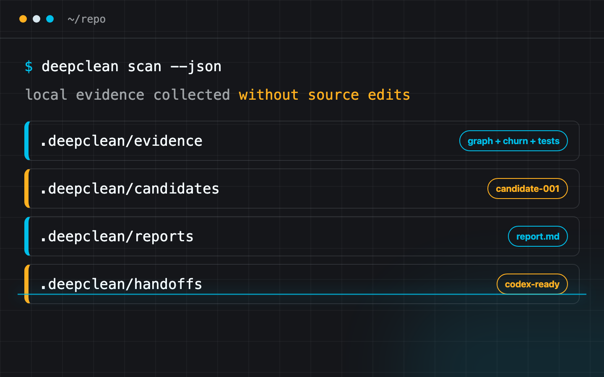

Scan
Collect local file metrics, duplication, graph, churn, and test signals.
Public alpha for AI-shaped codebases
Deepclean scans a local repo and turns messy structure into durable evidence, cleanup candidates, reports, and agent-ready handoffs.

Collect local file metrics, duplication, graph, churn, and test signals.
Turn evidence into cleanup candidates with confidence, impact, and effort.
Write readable Markdown and JSON reports under `.deepclean/`.
Generate bounded task packets an agent can take one improvement at a time.
Deepclean writes state to `.deepclean/` so findings can be reviewed, triaged, planned, and handed off without losing the evidence trail.
Deepclean reports cleanup work. Fix execution is intentionally separate.
Structured evidence is local. Source samples are redacted by default for synthesis.
Every finding needs evidence, confidence, impact, effort, and a handoff path.
npm install -g @fraction12/deepclean
deepclean init
deepclean scan --json
deepclean report
deepclean next